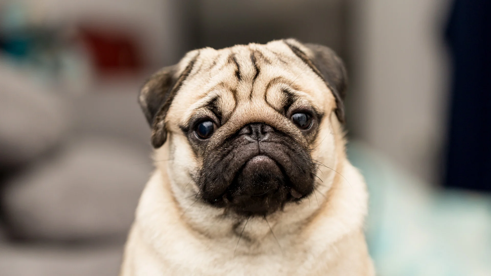
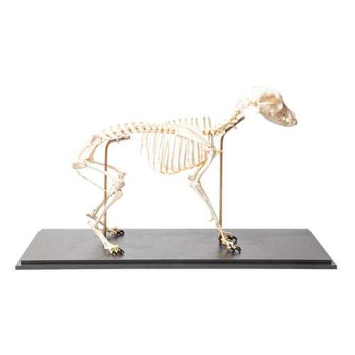

Yo, this dog is actually very cute. He is VERY cute, and floofy.
Reasons that this dog is cute:
Dogs are really cool and cute and I love them, that's a fact. The teacher asked for me to write a paper on the SCIENCE of dogs! I talked to her and she said what I have is not sciency enough. So here's a bit of science!
Domestic dogs come in a bewildering variety of shapes and sizes. They have been selectively bred for millenia for various behaviors, sensory capabilities, and physical attributes, including dogs bred for herding livestock (collies, sheperds, etc.), different kinds of hunting (pointers, hounds, etc.), catching rats (small terriers), guarding (mastiffs, chows), helping fishermen with nets (Newfoundlands, poodles), pulling loads (huskies, St. Bernard's), guarding carriages and horsemen (dalmatians), and as companion dogs. Some kinds were even bred simply as lap warmers (Pekingese). Their basic morphology though, no matter how modified, is that of their wild ancestors, gray wolves.
Domestic dogs are similar to their ancestors, wolves, in that they are both pack animals with a complex set of behaviors related to determining the dogs position in the social hierarchy and their mood. There is only one leader in a pack, and often there is a struggle between members of the pack to determine who the leader is. The struggle ends with one animal on top of the other, with the submissive animal lying on its back. The dominant animal places its paw on the chest of the submissive one, and until the submissive animal looks away from the eyes of the dominant animal, the struggle continues. As soon as the submissive animal averts his eyes, he has admitted defeat and the leader of the pack has been determined. Dogs exhibit characteristic postures that reveal their states of mind. The neutral position is when a dog is calmly observing things in the environment. The mouth of a dog in this position may be open or closed. In the alert position, the dog's mouth may be open or closed, depending on the excitement level and environmental temperature. The hairs along the back and shoulders may raise without any intent of the dog to attack. The dog has simply focused his attention on some object and is curious about it. Offensive threat posture: hair raised, teeth showing, nose wrinkled, and growling may be heard. The tail is upright, although it may be wagging. A dog in this stance is ready to attack. Defensive threat: although the dog may be growling and snarling, the ears are laid back, which is a sign of submission in normal dogs, and the tail is hanging down. Greetings: relaxed face, mouth slightly open, loosely pulled back ears, tail wagging. This is the posture dogs assume when playing with family members or other dogs. Play invitation: lowered front part of body while keeping the rear end up. A dog may bark in this invitation to play, but it does not growl excessivly. Submission: body low to the ground, as compact as possible. Ears are drawn back, tail is tucked tightly under body. Submissive dogs pull the corners of their mouths back but do not show their teeth (submissive grin). Some submissive dogs assume the most vulnerable position known to dogs, lying on the backs, exposing their undersides. This position admits ultimate defeat in the struggle of dominance between dogs.
Domestic dogs use a complex set of communication modes to navigate their social environment. Chemical cues, such as pheromones, communicate information on reproductive status, social status, and mood. Body language is heavily used and various vocalizations are used as well. Social bonding and communication also occurs through touch.
Puppies have different feeding habits than older dogs. A puppy needs twice as much protein and 50% more calories per pound of body weight daily in order to meet its growth requirements. A rapid change in a puppy's diet may cause gastrointestinal upsets. Puppies must feed 4 times daily until the age of 3 months, 3 times daily until 6 months and twice daily for the rest of its life. Older dogs' feeding habits are different in a couple of ways. The average size dog requires about 30 calories per pound of body weight per day. Interestingly, larger breeds need only 20 calories per pound of weight, while smaller breeds need about 40 calories per pound of body weight. A dog's diet should consist of balanced porportions of proteins, carbohydrates, fats and, of course, water. A dog can go days without food and lose 30% to 40% of it's body weight without dying, but a 10% to 15% water loss could be fatal. All-meat diets are not recommended for dogs due to the lack of calcium and iron found in meat. Diet supplements should be avoided. Human foods that can be fatal to dogs include moldy cheese, onions, and chocolate. Feral domestic dogs will eat a variety of foods including animals and fruits.
I hope that's enough SCIENCE! for you, Ms. HandersoN!
I made a little game! About dogs! I hope you have fun :):)
This game is a real journey! Are you ready for the
ADVENTURE??
This dog is really cute and happy! Love it!
This dog is kinda cute! Would be even cutter if not for the impaired breathing, spinal problems and overall horrid genetics.

funny dog meme funny
ms handerson please say what happened to this dog
is it dead???
why?????